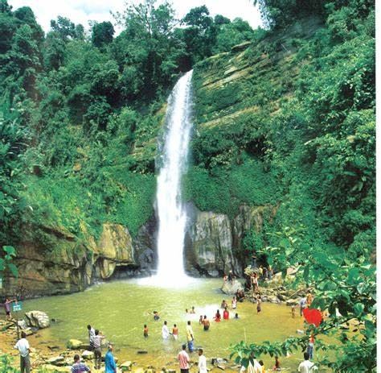
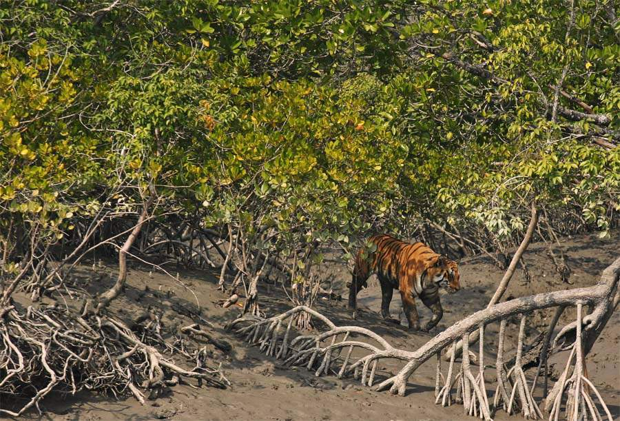
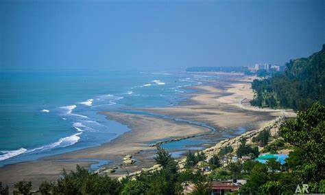

Diverse Landscapes:
Bangladesh offers a variety of landscapes that will leave you in awe. From rolling green hills to serene lakes, crystal-clear rivers, and tropical rainforests, the country’s natural diversity is captivating
Cultural Significance:
The landscape of Bangladesh is deeply intertwined with its cultural heritage. Ancient mosques, terracotta architecture, and historic sites dot the countryside.
Tea Fields of Sreemangal:
Sreemangal, known as the “Tea Capital of Bangladesh,” offers picturesque tea gardens. Rolling hills covered in lush green tea bushes create a serene and scenic landscape
Cox’s Bazar:
Cox’s Bazar boasts the world’s longest unbroken sea beach. The golden sands stretch for approximately 120 kilometers, offering breathtaking views of the Bay of Bengal
Sajek Valley:
Nestled in the Chittagong Hill Tracts, Sajek Valley offers panoramic views of mist-covered hills, lush forests, and indigenous villages. It’s a hidden gem for nature enthusiasts
  